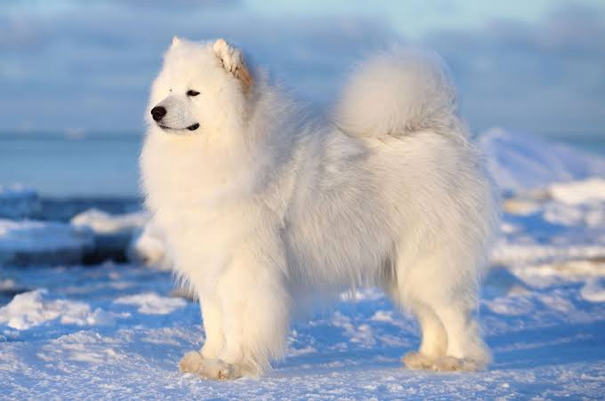
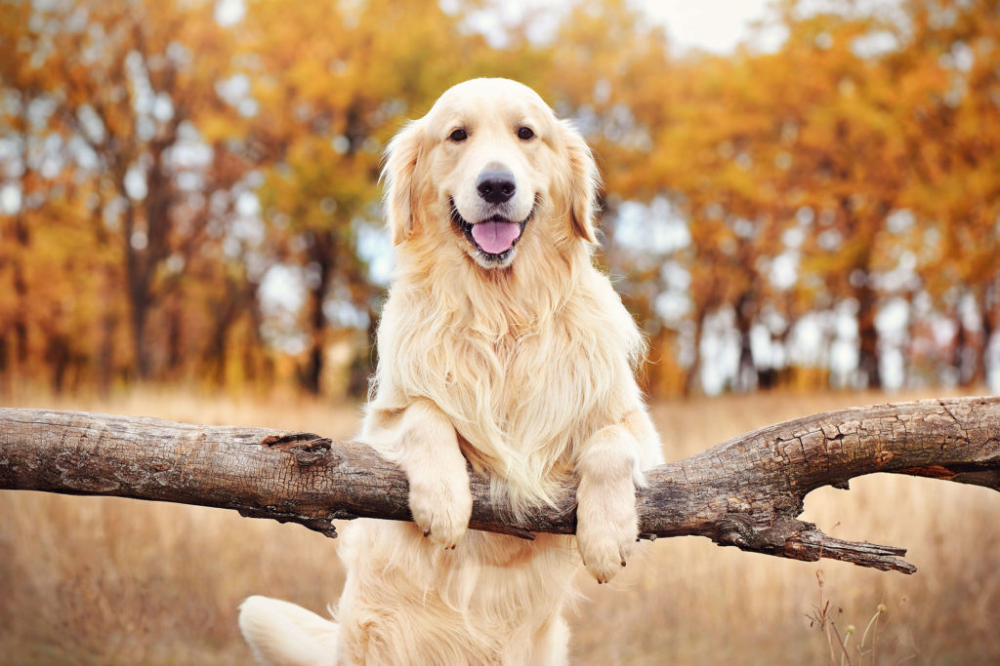

The Samoyed is a breed of medium-size herding dogs with thick, white, double-layer coats.
The Samoyed dog breed, originally bred to hunt, haul sledges, and herd reindeer, proved a valuable
companion for the Samoyed people of northwestern Siberia. The dogs also hiked with their packs,
tracked, and warmed their owners by sleeping on top of them at night.

The Golden Retriever is a Scottish of retriever dog of medium size.
It is characterized by a gentle and affectionate nature and a striking
Golden coat.
It is also used as a gun dog (a type of hunting dog for soft-mouthed retrieving of fowl) and may be trained for use as a guide dog.